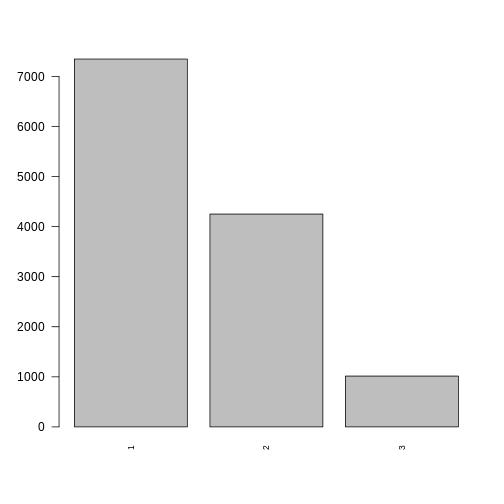
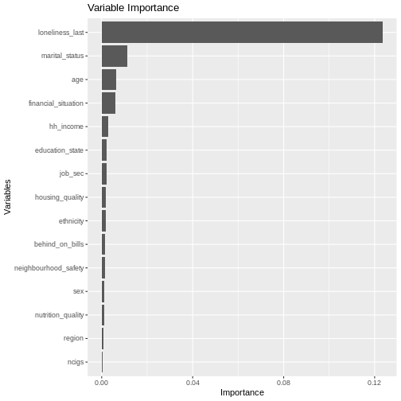
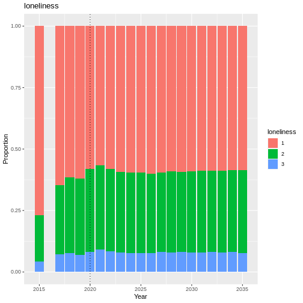
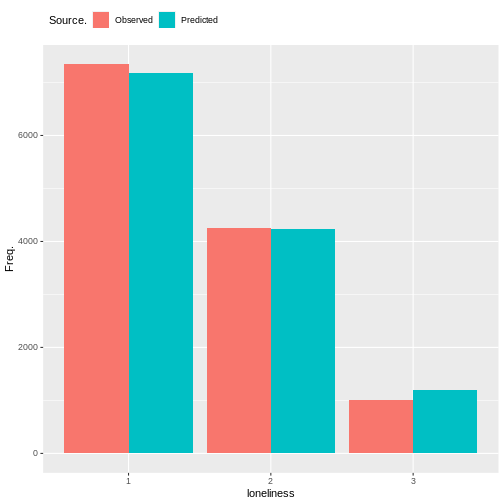
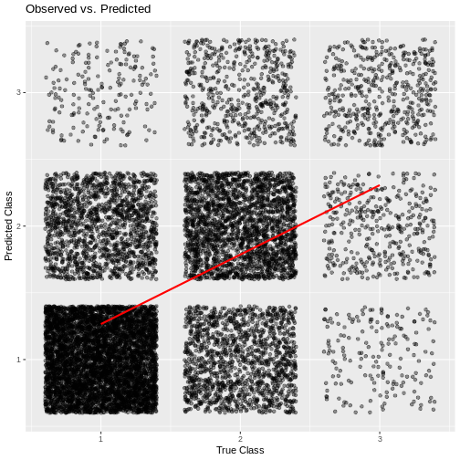

Loneliness
A score for loneliness is taken directly from a US variable - sclonely. The questions used to output levels of loneliness in Understanding Society come from the Government Statistical Service (GSS) harmonised principle of loneliness. This means the outputs are comparable with other surveys that use this principle. The GSS has a guidance page which may be useful to understand what other data can and cannot be compared with this output.
The sclonely variable is only available from wave 9 onwards, and is
an ordinal variable with 3 levels:
1 - Hardly ever or never 2 - Some of the time 3 - Often
This means that lower scores mean “better” subjective scores of loneliness.
#discrete_barplot(obs, 'loneliness')
order <- c(1, 2, 3)
discrete_barplot(obs, order)

Fig. 16 plot of chunk loneliness_data
Transition Model
To predict the next state of loneliness we use a Random Forest Ordinal model from the ranger package in R.
Formula:
Loneliness has been linked with educational attainment. Higher educational attainment has been linked with lower levels of stress and neuroticism, of which both have been linked with loneliness (more neuroticism/stress linked to more loneliness).
Loneliness has been linked with ethnicity. > The association between ethnicity and loneliness was stronger among young and early middle-aged adults, compared to late middle-aged adults.
Predictor |
Description |
Li terature/Justification |
|---|---|---|
Previous Loneliness |
||
Age |
(Franssen et al. 2020) (Beutel et al. 2017) |
|
Sex |
(Franssen et al. 2020) (Beutel et al. 2017) |
|
Ethnicity |
||
Region |
Administrative region of the UK |
|
Education |
Highest attained qualification |
(Bishop and Martin 2007) (Franssen et al. 2020) |
Housing Quality |
||
Neighbourhood Safety |
||
Nutrition Quality |
||
Tobacco Consumption |
(Beutel et al. 2017) |
|
Labour State |
(Morrish and Medina-Lara 2021) (Moens et al. 2021) |
|
Job NSSEC |
8 level socio-economic employment category |
(Morrish and Medina-Lara 2021) (Moens et al. 2021) |
Household Income |
(Franssen et al. 2020) |
|
Marital Status |
(Franssen et al. 2020) (Beutel et al. 2017) |
|
Behind on Bills |
||
Financial Situation |
(Franssen et al. 2020) |
|
SF-12 MCS |
(Franssen et al. 2020) |
plot_rfo_importance(model)

Fig. 17 plot of chunk loneliness_model_summary
Validation
handover_ordinal(raw.dat, base.dat, v)

Fig. 18 plot of chunk loneliness_validation
Results
Random Forest Ordinal models from the ranger package cannot provide a summary like some other models can, so instead we will look at plots of observed vs predicted values as well as the importance of each variable in the resulting model.

Fig. 19 plot of chunk loneliness_output
cumulative_link_plot(obs, preds)
## `geom_smooth()` using formula = 'y ~ x'

Fig. 20 plot of chunk loneliness_performance
References
Beutel, Manfred E, Eva M Klein, Elmar Brähler, Iris Reiner, Claus Jünger, Matthias Michal, Jörg Wiltink, et al. 2017. “Loneliness in the General Population: Prevalence, Determinants and Relations to Mental Health.” BMC Psychiatry 17: 1–7.
Bishop, Alex J, and Peter Martin. 2007. “The Indirect Influence of Educational Attainment on Loneliness Among Unmarried Older Adults.” Educational Gerontology 33 (10): 897–917.
Franssen, Thanée, Mandy Stijnen, Femke Hamers, and Francine Schneider. 2020. “Age Differences in Demographic, Social and Health-Related Factors Associated with Loneliness Across the Adult Life Span (19–65 Years): A Cross-Sectional Study in the Netherlands.” BMC Public Health 20: 1–12.
Moens, Eline, Stijn Baert, Elsy Verhofstadt, and Luc Van Ootegem. 2021. “Does Loneliness Lurk in Temp Work? Exploring the Associations Between Temporary Employment, Loneliness at Work and Job Satisfaction.” PLoS One 16 (5): e0250664.
Morrish, N, and A Medina-Lara. 2021. “Does Unemployment Lead to Greater Levels of Loneliness? A Systematic Review.” Social Science & Medicine 287: 114339.